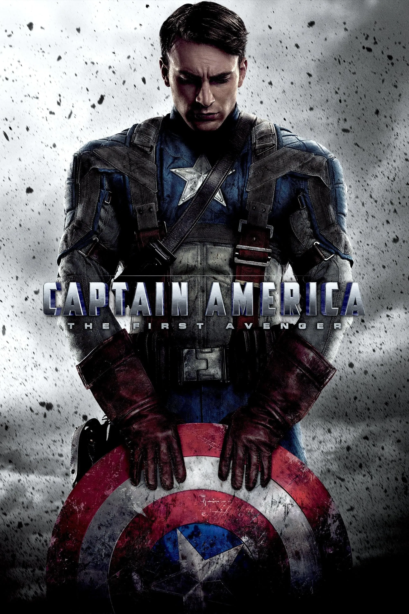

קפטן אמריקה: הנוקם הראשון (Captain America: the first avanger)
שנה: 2011
ז'אנר: פעולה, מדע בדיוני
דירוג: 6.9🌟
סטיב רוג'רס, צעיר חלש אך בעל ערכים מברקלין, מתנדב לניסוי צבאי במהלך מלחמת העולם השנייה והופך ל"סופר-חייל" עוצמתי – קפטן אמריקה. לאחר שארגון "הידרה" הנאצי (בהנהגת הגולגולת האדומה) משיג את אבן האנרגיה הקוסמית ("הטסרקט"), סטיב יוצא למלחמה מול הידרה כדי להציל את העולם. במהלך הקרבות חברו הטוב באקי בארנס נהרג, ובקרב הסופי על מטוס הנשק של הידרה, הגולגולת האדומה מושמד. כדי למנוע את הרס ניו יורק, סטיב מקריב את עצמו ומרסק את המטוס בקרחוני הקוטב. הוא קופא בקרח ומעורר כ-70 שנה מאוחר יותר בניו יורק המודרנית על ידי ניק פיורי.